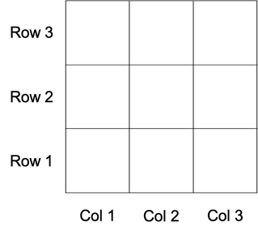
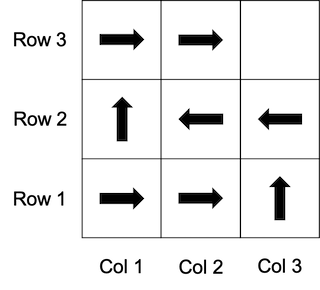
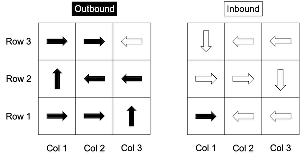

Tutorial 3 - Agents
This tutorial provides a brief introduction to implementing agents in Jason using its extension to the AgentSpeak language.
Getting started
When introducing a new programming language, it is customary to start with its Hello, World! program. This was already included in Tutorial 1a, but we will now go through it in more detail.
Step 1 - Create a new Jason project
Open Eclipse and select File > New > Other > Jason > Jason Project from the Eclipse menu.
Select Next.
Enter hello_world in the Project name field and select Finish.
If you are prompted to open the project in Jason perspective, select Open Perspective.
A new Jason project will be created with a default directory structure and two auto-generated files: src/asl/sample_agent.asl and hello_world.mas2j.
Note: To see the new Jason project you may need to close the Welcome tab.
Step 2 - Agent file
The file src/asl/sample_agent.asl is an agent program written in Jason's extension to the AgentSpeak language (hence the file extension .asl). All agent programs in a Jason project should be stored in the src/asl directory.
// Agent sample_agent in project hello_world
/* Initial beliefs and rules */
/* Initial goals */
!start.
/* Plans */
+!start : true <- .print("hello world.").
This examples demonstrates the following syntax:
//denotes the start of a line comment/*and*/denote the start and end of a block comment!startis an example of an initial achievement goal+!start : true <- .print("hello world.")is an example of a plan where<-is a separator+!start : trueis the plan head where:is a separator+!startis the plan triggering eventtrueis the plan context
.print("hello world.")is the plan body
+!startis an example of an achievement goal addition triggering eventtrueis a logical constant that always evaluates to true.print("hello world.")is an example of an internal action that printshello world.to the Jason console.denotes the end of initial beliefs, rules, achievement goals, and plans
When the agent is first run, the initial achievement goal !start is immediately transformed by the Jason interpreter into an external achievement goal addition event, denoted by its triggering event +!start.
According to the definition of external events in Jason, the event will include the empty intention.
This event is added to the agent's (initial) event set.
The Jason interpreter cycle is then divided into two phases: the reasoning phase, and the acting phase.
At the start of the reasoning phase the Jason interpreter will apply its event selection function to the event set.
Default event selection in Jason operates in a first in, first out (FIFO) fashion.
In this instance the event set only contains one event, so +!start will be selected.
If the selected event unifies with the triggering event of a plan then that plan is called a relevant plan.
If the context of a relevant plan is entailed (as in a Prolog-style query) by the agent's current belief base then that plan is called an applicable plan.
The Jason interpreter will find the set of applicable plans and then apply its option selection function to choose one of those plans to add to the intention stack of the selected event.
Default option selection in Jason operates in a prioritised fashion, as is standard in Prolog, based on the order that beliefs, plans, and rules appear in the agent file.
In this instance there is only one applicable plan +!start : true <- .print("hello world."), so it will be selected, pushed to the (empty) intention stack, and the intention will be added to the agent's intention set.
At the start of the acting phase the Jason interpreter will apply its intention selection function to the intention set.
Default intention selection in Jason operates in a round-robin fashion.
In this instance there is only one intention, so it will be selected and the first element in the body of the plan at the top of stack will be progressed.
In this instance the element to progress is the internal action .print("hello world."), which will print hello world. to the Jason console.
Since that action was the last element to progress, the intention is now complete.
The event set and intention set are both now empty, so the agent will wait silently for new events.
Note: It is important to emphasise that an agent program only specifies the initial beliefs, rules, goals, and plans of the agent. Jason allows each of these to change over time. As a rule of thumb, an agent program is trivial if beliefs and goals remain fixed over time, but it is reasonably common for rules and plans to remain fixed.
Step 3 - Jason configuration file
The file hello_world.mas2j is a Jason configuration file. There should be at least one configuration file in a Jason project, stored in the base directory, and typically with the same name as the project along with file extension .mas2j.
MAS hello_world {
infrastructure: Centralised
agents:
agent1 sample_agent;
aslSourcePath:
"src/asl";
}
This example demonstrates the following syntax:
MAS hello_worldtells Jason this is a Jason configuration file for a Jason project calledhello_world{and}denote the start and end of the Jason configuration optionsinfrastructurespecifies how the Jason project should runCentralisedis the default value and should be left unchanged
agentsspecifies the list of agents where;is a separatoragent1 sample_agentis an example of an agent definitionagent1is the (optional) agent namesample_agentis the (required) agent type as defined bysample_agent.asl
aslSourcePathspecifies the (relative) path of the directory where.aslfiles are stored"src/asl"is the default value and should be left unchanged
If our project in Eclipse is called hello_world then the Jason configuration file might be called hello_world.mas2j and the file contents might start with MAS hello_world.
The format of the agent definition demonstrates that an agent program (.asl file) actually specifies an agent type, with an agent being an instantiation of an agent type identified by an agent name. This is analogous to the difference between a class and an object in object-oriented programming. If the agent name is omitted from an agent definition then Jason will automatically use the agent type as the agent name followed by an index (e.g. sample_agent1).
Note: It is good practice to always include an explicit agent name in the agent definition.
Step 4 - Run the Jason project
With the hello_world project in focus, select Run Jason Application in the Eclipse toolbar.
Note: There may be two identical buttons in the Eclipse toolbar; ensure that you select the button labelled Run Jason Application rather than the button labelled Run.

This window is the Jason console.
If an agent executes the internal action .print("hello world."), then the parameter text hello world. will be printed to the console and labelled with the agent's name.
For example, the line [agent1] hello world. means that agent agent1 has executed .print("hello world.").
Notice that the Jason project is still running; Jason agents persist until they are explicitly terminated.
Step 5 - Terminate the Jason project
This will terminate the Jason project, including all running agents.
Example - Happy birthday
To illustrate the relationship between Prolog and Jason, let us translate the Prolog program from Tutorial 2 into Jason.
Step 6 - Create a new agent
With the hello_world project highlighted in Eclipse, select File > New > Agent.
Enter family_tree in the Agent name field and select Finish.
A new file family_tree.asl should be created in src/asl and its content should be similar to the existing sample_agent.asl file.
Edit the Jason configuration file as follows:
MAS hello_world {
infrastructure: Centralised
agents:
agent2 family_tree;
aslSourcePath:
"src/asl";
}
Step 7 - Initial beliefs and rules
Update family_tree.asl as follows:
/* Initial beliefs and rules */
// Initial base beliefs
female(alice).
female(carol).
female(eve).
female(grace).
female(heidi).
female(judy).
female(peggy).
female(wendy).
male(bob).
male(dave).
male(frank).
male(ivan).
male(mike).
male(oscar).
male(rupert).
male(ted).
male(victor).
parent(dave, alice).
parent(dave, bob).
parent(eve, alice).
parent(eve, bob).
parent(ivan, carol).
parent(ivan, dave).
parent(heidi, carol).
parent(heidi, dave).
parent(mike, eve).
parent(mike, frank).
parent(judy, eve).
parent(judy, frank).
parent(peggy, grace).
parent(peggy, ivan).
parent(rupert, grace).
parent(rupert, ivan).
parent(ted, judy).
parent(ted, oscar).
parent(victor, judy).
parent(victor, oscar).
parent(wendy, judy).
parent(wendy, oscar).
age(alice, 91).
age(bob, 92).
age(carol, 61).
age(dave, 62).
age(eve, 63).
age(frank, 64).
age(grace, 31).
age(ivan, 32).
age(heidi, 33).
age(mike, 34).
age(judy, 35).
age(oscar, 36).
age(peggy, 1).
age(rupert, 2).
age(ted, 3).
age(victor, 4).
age(wendy, 5).
// Initial rules
child(X, Y) :- parent(Y, X).
mother(X, Y) :- parent(X, Y) & female(Y).
father(X, Y) :- parent(X, Y) & male(Y).
sibling(X, Y) :- parent(X, Z) & parent(Y, Z) & X \== Y.
grandparent(X, Z) :- parent(X, Y) & parent(Y, Z).
cousin(X, Y) :- grandparent(X, Z) & grandparent(Y, Z) & not(sibling(X, Y)) & X \== Y.
immediate_family(X, Y) :- parent(X, Y) | child(X, Y) | sibling(X, Y).
adult(X) :- age(X, Y) & Y >= 18.
years_as_adult(X, Z) :- adult(X) & age(X, Y) & Z = Y - 18.
ancestor(X, Z) :- parent(X, Z).
ancestor(X, Z) :- parent(X, Y) & ancestor(Y, Z).
ages(List) :- .findall(X, age(_, X), List).
swap([X, Y | Rest], [Y, X | Rest]) :- X > Y.
swap([Z | Rest], [Z | RestPrime]) :- swap(Rest, RestPrime).
bubble_sort(List, Sorted) :- swap(List, ListPrime) & bubble_sort(ListPrime, Sorted).
bubble_sort(Sorted, Sorted).
ages_sorted(SortedList) :- ages(List) & bubble_sort(List, SortedList).
/* Initial goals */
/* Plans */
Notice that this Jason code is almost identical to the the Prolog code from Tutorial 2. The few exceptions are:
- Comments are denoted by
//or/*...*/rather than%(percent) - Conjunction is denoted by
&(ampersand) rather than,(comma) - Disjunction is denoted by
|(vertical bar) rather than;(semi-colon) - Arithmetic operations are denoted by
=(equals) rather thanis - In-built predicate
findall/3is prepended with.(full stop)
There are also a few differences in terminology: what were called facts in Prolog are now called initial base beliefs, and what were called rules are now called initial rules.
Note: In Jason arithmetic operations are automatically evaluated in-place, so the rule for
years_as_adult/2could also be written asyears_as_adult(X, Y - 18) :- adult(X) & age(X, Y).
Step 8 - Run the Jason project
Remove agent1 from the Jason configuration file.
MAS hello_world {
infrastructure: Centralised
agents:
agent2 family_tree;
aslSourcePath:
"src/asl";
}
Run the Jason project.
The empty Jason console should appear. Notice that there is no way for you as a Jason programmer to manually submit Prolog-style queries. While Jason does rely on queries, for the most part they are handled automatically by the Jason interpreter (e.g. when evaluating relevant plans, applicable plans, and test goals). As a Jason programmer it is your responsibility to write plans, with appropriate triggering events and plan contexts, that encode the agent's behaviour relative to its current belief base and event set.
Step 9 - Belief change & achievement (sub)goals
Add the following initial base beliefs to family_tree.asl:
self_name(dave).
birthday(eve).
birthday(ivan).
birthday(wendy).
Add the following initial achievement goal and plans to family_tree.asl:
/* Initial goals */
!wish_happy_birthday.
/* Plans */
+!wish_happy_birthday : self_name(X) & birthday(Y) & sibling(X, Y) & female(Y) & not acknowledged(Y) <- .print("Happy birthday ", Y, "! You are my favourite sister"); +acknowledged(Y); !wish_happy_birthday.
+!wish_happy_birthday : self_name(X) & birthday(Y) & sibling(X, Y) & male(Y) & not acknowledged(Y) <- .print("Happy birthday ", Y, "! You are my favourite brother"); +acknowledged(Y); !wish_happy_birthday.
+!wish_happy_birthday : self_name(X) & birthday(Y) & immediate_family(X, Y) & not acknowledged(Y) <- .print("Happy birthday ", Y, "!"); +acknowledged(Y); !wish_happy_birthday.
+!wish_happy_birthday : true <- .print("Hmm, hope I have not forgotten anyone...").
This code makes use of a range of Jason language features, e.g.:
| Feature | Example |
|---|---|
| Negation | not acknowledged(Y) |
| Conjunction | self_name(X) & birthday(Y) |
| Variable repetition | birthday(Y) & sibling(X, Y) |
| Goal addition triggering events | +!wish_happy_birthday |
| Achievement (sub)goals | !wish_happy_birthday |
| Recursion | +!wish_happy_birthday : ... <- ...; !wish_happy_birthday. |
| Standard internal actions | .print("Happy birthday ", Y, "!") |
| Belief change actions | +acknowledged(Y) (belief addition) |
According to the code the agent thinks he is dave, that eve, ivan, and wendy all have their birthdays today, that eve and ivan are immediate family members (with eve a sibling), and that wendy is not an immediate family member. The agent has the initial achievement goal !wish_happy_birthday, which according to the plans mean he wants to wish someone in his immediate family happy birthday if their birthday is today and he has not already wished them happy birthday. Moreover, if that person is his brother or sister then he wants to tell them they are his favourite brother or sister. After having wished someone happy birthday, the agent records in his belief base that he has done so.
Run the Jason project.
[agent2] Happy birthday eve! You are my favourite sister
[agent2] Happy birthday ivan!
[agent2] Hmm, hope I have not forgotten anyone...
This result matches the intended logic of the Jason code.
Note: The fourth plan was not selected in earlier runs because, although it is always applicable for achievement goal
!wish_happy_birthday, it is positioned at the bottom of the agent file and thus has lowest priority; it will only be selected if there are no other applicable plans with higher priority.
Example - Grid world cleaner
Imagine an arbitrary grid world, such as a 3 by 3 grid. Columns are indexed from left to right on the x-axis. Rows are indexed from bottom to top on the y-axis.

Step 10 - Traverse once
Suppose we want to implement an agent that can traverse the grid according to the following logic:

Add the following Jason code to a file called robot.asl.
/* Initial beliefs and rules */
grid(3, 3).
location(robot, 1, 1).
next_move(right) :- grid(Columns, _) & location(robot, X, Y) & X < Columns & Y mod 2 \== 0.
next_move(left) :- location(robot, X, Y) & X > 1 & Y mod 2 == 0.
next_move(up) :- grid(_, Rows) & location(robot, 1, Y) & Y < Rows & Y mod 2 == 0.
next_move(up) :- grid(Columns, Rows) & location(robot, Columns, Y) & Y < Rows & Y mod 2 \== 0.
next_move(unknown).
/* Initial goals */
!explore.
/* Plans */
+!explore :
next_move(Direction) & Direction \== unknown <-
!move(Direction);
?location(robot, X, Y);
.print("Arrived at row ", Y, ", column ", X);
!explore.
+!explore : true <- .print("Stopping").
+!move(right) : location(robot, X, Y) <- -location(robot, X, Y); +location(robot, X+1, Y).
+!move(up) : location(robot, X, Y) <- -location(robot, X, Y); +location(robot, X, Y+1).
+!move(left) : location(robot, X, Y) <- -location(robot, X, Y); +location(robot, X-1, Y).
+!move(down) : location(robot, X, Y) <- -location(robot, X, Y); +location(robot, X, Y-1).
This code makes use of a range of Jason language features, e.g.:
| Feature | Example(s) |
|---|---|
| Anonymous variable | grid(Columns, _), grid(_, Rows) |
| Relational expressions | Direction \== unknown |
| Arithmetic operations | Y mod 2, X+1, X-1 |
| Arithmetic expressions | X < Columns, X > 1, Y mod 2 == 0 |
| Conjunction | next_move(Direction) & Direction \== unknown |
| Variable repetition | grid(Columns, Rows) & location(robot, Columns, Y) |
| Goal addition triggering events | +!explore |
| Achievement (sub)goals | !explore, !move(Direction) |
| Test (sub)goals | ?location(robot, X, Y) |
| Recursion | +!explore : ... <- ...; !explore. |
| Standard internal actions | .print("Stopping"), .wait(500) |
| Belief change actions | +location(robot, X+1, Y) (addition), -location(robot, X, Y) (deletion) |
Roughly speaking, the code can be understood as follows:
- Initial base beliefs
grid(3, 3)andlocation(robot, 1, 1)say that the world is a 3 by 3 grid and that the agent is initially in cell(1, 1)(i.e. the bottom left corner). - Rules for
next_move/1determine the next movement direction based on the agent's current position, the dimensions of the grid, and whether the agent's current row is even (Y mod 2 == 0) or odd (Y mod 2 \== 0), with the direction for the top right cell being undefined (unknown) - Plans with triggering event
+!exploresay that the agent should continue to move according to the direction determined bynext_move/1until the direction isunknown - Plans with triggering event
+!move(X)serve to increment or decrement the agent's (belief about its) current row or column using belief change actions, firstly by deleting the existing belief (-location(robot, X, Y)), and secondly by adding a new belief (e.g.+location(robot, X+1, Y)) - The test (sub)goal
?location(robot, X, Y)serves to query the agent's belief base for its location after the!move(Direction)has been achieved, demonstrating a key use case for test (sub)goal which is delayed instantiation of variables; had we includedlocation(robot, X, Y)in the plan context, then the subsequent.printmessage would have shown the agent's location before the!move(Direction)had been achieved
Remove any existing agents from the Jason configuration file and create a new agent called agent3.
MAS hello_world {
infrastructure: Centralised
agents:
agent3 robot;
aslSourcePath:
"src/asl";
}
Run the Jason project.
[agent3] Arrived at row 1, column 2
[agent3] Arrived at row 1, column 3
[agent3] Arrived at row 2, column 3
[agent3] Arrived at row 2, column 2
[agent3] Arrived at row 2, column 1
[agent3] Arrived at row 3, column 1
[agent3] Arrived at row 3, column 2
[agent3] Arrived at row 3, column 3
[agent3] Stopping
This matches the original traversal logic.
Note: Remember that the agent is moving in its own mind only, since it is executing belief change actions rather than environment actions. Implementing environment actions in Jason is covered in Appendix A.
Step 11 - Test (sub)goals
Before we move on it may be worth saying a little more about test (sub)goals.
When the Jason interpreter encounters a test (sub)goal such as ?location(robot, X, Y) it will initially treat this as a standard query location(robot, X, Y) applied to the agent's current belief base. If the query cannot be answered, the Jason interpreter will then try to find an applicable plan from the agent's plan library for triggering event +?location(robot, X, Y). If such a plan exists and is completed successfully (e.g. by executing any actions and completing any subgoals) then the test (sub)goal is achieved and any variables will be fully instantiated, effectively answering the original query. In this sense, a test goal is an epistemic goal.
Note: It might help to think of variables in an achievement goal as being its inputs (i.e. they must be fully instantiated before the goal can be completed) and variables in a test (sub)goal as being its outputs (i.e. they will be fully instantiated after it is completed).
Suppose we just want to slow things by telling the agent to delay execution for 500 milliseconds while it checks its current location. Replace the first two plans as follows:
+!explore :
next_move(Direction) & Direction \== unknown <-
!move(Direction);
?where_am_i(X, Y);
.print("Arrived at row ", Y, ", column ", X);
!explore.
+!explore : true <- .print("Stopping").
+?where_am_i(X, Y) : location(robot, X, Y) <- .wait(500).
Run the Jason project.
The same text should appear as before but there should now be a delay of 500 milliseconds between each step.
Step 12 - Adapt to different grids
We know that the code works for a 3 by 3 grid where the agent is in the bottom left corner. However, the code would be rather limited and uninteresting if it only worked in this instance.
Change the code to use a 5 by 4 grid:
grid(5, 4).
Rerun the Jason project.
[agent3] Arrived at row 1, column 2
[agent3] Arrived at row 1, column 3
[agent3] Arrived at row 1, column 4
[agent3] Arrived at row 1, column 5
[agent3] Arrived at row 2, column 5
[agent3] Arrived at row 2, column 4
[agent3] Arrived at row 2, column 3
[agent3] Arrived at row 2, column 2
[agent3] Arrived at row 2, column 1
[agent3] Arrived at row 3, column 1
[agent3] Arrived at row 3, column 2
[agent3] Arrived at row 3, column 3
[agent3] Arrived at row 3, column 4
[agent3] Arrived at row 3, column 5
[agent3] Arrived at row 4, column 5
[agent3] Arrived at row 4, column 4
[agent3] Arrived at row 4, column 3
[agent3] Arrived at row 4, column 2
[agent3] Arrived at row 4, column 1
[agent3] Stopping
This demonstrates that the code generalises to different grid dimensions.
Change the agent's initial position to cell (2, 3):
location(robot, 2, 3).
Rerun the Jason project.
[agent3] Arrived at row 3, column 3
[agent3] Arrived at row 3, column 4
[agent3] Arrived at row 3, column 5
[agent3] Arrived at row 4, column 5
[agent3] Arrived at row 4, column 4
[agent3] Arrived at row 4, column 3
[agent3] Arrived at row 4, column 2
[agent3] Arrived at row 4, column 1
[agent3] Stopping
This demonstrates that the code generalises to different initial positions, with the caveat that the agent will only complete a full traversal of the grid when starting from the bottom left cell, which is consistent with the original logic.
Reset the grid dimensions and initial position to their original values:
grid(3, 3).
location(robot, 1, 1).
Note: Generalisability is the mark of a good Jason implementation. You should try to implement your agents in such a way that they can adapt to different initial beliefs and initial achievement goals.
Step 13 - Traverse forever
Suppose we want the agent to traverse the grid back and forth forever. One option is to extend the previous code by treating it as an outbound traversal, while adding equivalent code for an inbound traversal, i.e.:

Updated the rules for next_move/1 as follows:
next_move(right) :- route(robot, outbound) & grid(Columns, _) & location(robot, X, Y) & X < Columns & Y mod 2 \== 0.
next_move(right) :- not route(robot, outbound) & grid(Columns, _) & location(robot, X, Y) & X < Columns & Y mod 2 == 0.
next_move(left) :- route(robot, outbound) & location(robot, X, Y) & X > 1 & Y mod 2 == 0.
next_move(left) :- not route(robot, outbound) & location(robot, X, Y) & X > 1 & Y mod 2 \== 0.
next_move(up) :- route(robot, outbound) & grid(_, Rows) & location(robot, 1, Y) & Y < Rows & Y mod 2 == 0.
next_move(up) :- route(robot, outbound) & grid(Columns, Rows) & location(robot, Columns, Y) & Y < Rows & Y mod 2 \== 0.
next_move(down) :- not route(robot, outbound) & grid(Columns, Rows) & location(robot, Columns, Y) & Y > 1 & Y mod 2 == 0.
next_move(down) :- not route(robot, outbound) & grid(_, Rows) & location(robot, 1, Y) & Y > 1 & Y mod 2 \== 0.
next_move(unknown).
Notice that four rules have been added (for the inbound traversal) and all rules are now conditioned on a new belief atom route(robot, outbound). This implies that agent can track whether it should be following an inbound or outbound traversal merely by adding or deleting route(robot, outbound) from its belief base.
Add the following plans to the bottom of the plan library:
+location(robot, X, Y) :
grid(X, Y) & ( ( Y mod 2 \== 0 ) | ( Y mod 2 == 0 & X == 1 ) ) <-
-route(robot, outbound);
.print("Now travelling inbound").
+location(robot, 1, 1) : true <- +route(robot, outbound); .print("Now travelling outbound").
This code makes use of a some additional Jason language features:
| Feature | Example(s) |
|---|---|
| Disjunction | ( Y mod 2 \== 0 ) | ( Y mod 2 == 0 & X == 1 ) |
| Belief addition triggering events | +location(robot, X, Y), +location(robot, 1, 1) |
Roughly speaking, the code says that the agent should add route(robot, outbound) as a belief when it arrives (or rather believes it has arrived) in the bottom left cell, and should delete route(robot, outbound) when arrives in the top right cell. Thus route(robot, outbound) will evaluate to true while the agent is on its outbound traversal, and not route(robot, outbound) will evaluate to true on its inbound traversal.
Run the Jason project.
[agent3] Now travelling outbound
[agent3] Arrived at row 1, column 2
[agent3] Arrived at row 1, column 3
[agent3] Arrived at row 2, column 3
[agent3] Arrived at row 2, column 2
[agent3] Arrived at row 2, column 1
[agent3] Arrived at row 3, column 1
[agent3] Arrived at row 3, column 2
[agent3] Now travelling inbound
[agent3] Arrived at row 3, column 3
[agent3] Arrived at row 3, column 2
[agent3] Arrived at row 3, column 1
[agent3] Arrived at row 2, column 1
[agent3] Arrived at row 2, column 2
[agent3] Arrived at row 2, column 3
[agent3] Arrived at row 1, column 3
[agent3] Arrived at row 1, column 2
[agent3] Now travelling outbound
[agent3] Arrived at row 1, column 1
...
These print messages will continue until the Jason project is terminated, which demonstrates that the traversal behaviour is working correctly.
Suppose the grid is littered with items (e.g. waste) and the agent's job is to collect and deposit the items somewhere else (e.g. a bin).
Step 14 - Collect one item at a time
Suppose the agent can carry one item at a time. Add the following initial base beliefs:
location(bin, 1, 3).
location(waste, 3, 1).
location(waste, 2, 2).
Replace the plans and initial achievement goal for !explore with the following:
/* Initial goals */
!clean.
/* Plans */
+!clean :
location(robot, X, Y) & location(bin, X, Y) & carrying(robot, waste) <-
.print("Depositing waste in the bin");
-carrying(robot, waste);
!clean.
+!clean :
location(robot, X, Y) & location(waste, X, Y) & not carrying(robot, waste) <-
.print("Picking up waste");
-location(waste, X, Y);
+carrying(robot, waste);
!clean.
+!clean :
next_move(Direction) & Direction \== unknown <-
!move(Direction);
?where_am_i(X, Y);
.print("Arrived at row ", Y, ", column ", X);
!clean.
+!clean : true <- .print("Stopping").
Aside from renaming explore to clean (which better reflects the new meaning of the code), the only changes here are the addition of the first two plans.
The second plan says that if the agent is in the same location as waste, and is not currently carrying waste, then it should pick up the waste and continue with its cleaning procedure. Technically the action of picking up the waste is achieved by deleting location(waste, X, Y) from the agent's belief base and adding carrying(robot, waste) (i.e. the waste disappears from the environment but is now being carried by the agent).
The first plan then says that if the agent is in the same location as the bin, and is carrying waste, then it should deposit the waste in the bin and continue with its cleaning procedure. Technically the action of depositing waste in the bin is achieved by deleting carrying(robot, waste) from the agent's belief base (i.e. the waste is neither in the environment, nor is it being carried by the agent, so in effect it has disappeared altogether).
Run the Jason project.
[agent3] Now travelling outbound
[agent3] Arrived at row 1, column 2
[agent3] Arrived at row 1, column 3
[agent3] Picking up waste
[agent3] Arrived at row 2, column 3
[agent3] Arrived at row 2, column 2
[agent3] Arrived at row 2, column 1
[agent3] Arrived at row 3, column 1
[agent3] Depositing waste in the bin
[agent3] Arrived at row 3, column 2
[agent3] Now travelling inbound
[agent3] Arrived at row 3, column 3
[agent3] Arrived at row 3, column 2
[agent3] Arrived at row 3, column 1
[agent3] Arrived at row 2, column 1
[agent3] Arrived at row 2, column 2
[agent3] Picking up waste
[agent3] Arrived at row 2, column 3
[agent3] Arrived at row 1, column 3
[agent3] Arrived at row 1, column 2
[agent3] Now travelling outbound
[agent3] Arrived at row 1, column 1
[agent3] Arrived at row 1, column 2
[agent3] Arrived at row 1, column 3
[agent3] Arrived at row 2, column 3
[agent3] Arrived at row 2, column 2
[agent3] Arrived at row 2, column 1
[agent3] Arrived at row 3, column 1
[agent3] Depositing waste in the bin
[agent3] Arrived at row 3, column 2
[agent3] Now travelling inbound
[agent3] Arrived at row 3, column 3
...
We can see here that the agent collected one item of waste on its outbound traversal, and one item on its inbound traversal, but had to wait until its second outbound traversal until it could deposit the second item in the bin.
Step 15 - Collect multiple items at a time
Suppose the agent can carry multiple items at a time. Add the following initial base belief:
carrying(robot, waste, 0).
Replace the first two plans with the following:
+!clean :
location(robot, X, Y) & location(bin, X, Y) & carrying(robot, waste, ItemCount) & ItemCount > 0 <-
.print("Depositing waste (x", ItemCount, ") in the bin");
-carrying(robot, waste, ItemCount);
+carrying(robot, waste, 0);
!clean.
+!clean :
location(robot, X, Y) & location(waste, X, Y) & carrying(robot, waste, ItemCount) <-
.print("Picking up waste");
-location(waste, X, Y);
-carrying(robot, waste, ItemCount);
+carrying(robot, waste, ItemCount+1);
!clean.
The only change here is that carrying(robot, waste) has been replaced with carrying(robot, waste, ItemCount) such that ItemCount is always a number (representing the number of items that the agent is carrying).
Notice that the initial base belief carrying(robot, waste, 0) serves to initialise ItemCount to 0 according to the logic of the new plans. The first plan then uses an arithmetic expression rather than negation (as failure) to determine whether the agent is carrying waste. Depositing waste has the effect of resetting ItemCount to 0, while picking up waste has the effect of incrementing ItemCount by 1
Run the Jason project.
[agent3] Now travelling outbound
[agent3] Arrived at row 1, column 2
[agent3] Arrived at row 1, column 3
[agent3] Picking up waste
[agent3] Arrived at row 2, column 3
[agent3] Arrived at row 2, column 2
[agent3] Picking up waste
[agent3] Arrived at row 2, column 1
[agent3] Arrived at row 3, column 1
[agent3] Depositing waste (x2) in the bin
[agent3] Arrived at row 3, column 2
[agent3] Now travelling inbound
[agent3] Arrived at row 3, column 3
...
The agent has collected both items of waste on its outbound traversal.
Step 16 - Collect items of a given type
Suppose the grid is also littered with dishes. Add the following initial base beliefs:
location(sink, 2, 3).
location(dishes, 2, 1).
location(dishes, 1, 2).
location(dishes, 3, 2).
carrying(robot, dishes, 0).
destination(waste, bin).
destination(dishes, sink).
Replace the plans and initial goal for !clean with the following:
/* Initial goals */
!clean(dishes).
/* Plans */
+!clean(Item) :
destination(Item, Target) & location(robot, X, Y) & location(Target, X, Y) & carrying(robot, Item, ItemCount) & ItemCount > 0 <-
.print("Depositing ", Item, " (x", ItemCount, ") in the ", Target);
-carrying(robot, Item, ItemCount);
+carrying(robot, Item, 0);
!clean(Item).
+!clean(Item) :
location(robot, X, Y) & location(Item, X, Y) & carrying(robot, Item, ItemCount) <-
.print("Picking up ", Item);
-location(Item, X, Y);
-carrying(robot, Item, ItemCount);
+carrying(robot, Item, ItemCount+1);
!clean(Item).
+!clean(Item) :
next_move(Direction) & Direction \== unknown <-
!move(Direction);
?where_am_i(X, Y);
.print("Arrived at row ", Y, ", column ", X);
!clean(Item).
+!clean(_) : true <- .print("Stopping").
The main change here is that the achievement goal !clean has been replaced with a parameterised version !clean(Item), while two new initial base beliefs destination(waste, bin) and destination(dishes, sink) have been added. Notice that the new term Item must be accounted for across all four plans, but the actual logic of the plans remains the same.
According to the initial achievement goal !clean(dishes) the agent should collect dishes and deposit them in the sink, but should ignore any waste.
Run the Jason project.
[agent3] Now travelling outbound
[agent3] Arrived at row 1, column 2
[agent3] Picking up dishes
[agent3] Arrived at row 1, column 3
[agent3] Arrived at row 2, column 3
[agent3] Picking up dishes
[agent3] Arrived at row 2, column 2
[agent3] Arrived at row 2, column 1
[agent3] Picking up dishes
[agent3] Arrived at row 3, column 1
[agent3] Arrived at row 3, column 2
[agent3] Depositing dishes (x3) in the sink
[agent3] Now travelling inbound
[agent3] Arrived at row 3, column 3
...
Update the initial achievement goal as follows:
!clean(waste).
Rerun the Jason project.
[agent3] Now travelling outbound
[agent3] Arrived at row 1, column 2
[agent3] Arrived at row 1, column 3
[agent3] Picking up waste
[agent3] Arrived at row 2, column 3
[agent3] Arrived at row 2, column 2
[agent3] Picking up waste
[agent3] Arrived at row 2, column 1
[agent3] Arrived at row 3, column 1
[agent3] Depositing waste (x2) in the bin
[agent3] Arrived at row 3, column 2
[agent3] Now travelling inbound
[agent3] Arrived at row 3, column 3
...
In both instances we see that the agent as able to collect items of a given type (Item) and deposit them in the appropriate place (Target) according to its prior knowledge (destination(Item, Target)).
Note: This is an example of generalisability via parameterised achievement goals.
Conclusion
In this tutorial we had a brief introduction to implementing AgentSpeak agents in Jason using two examples (family tree, grid world) to illustrate various Jason language features.
In the next tutorial we will look at how to implement multi-agent systems in Jason, focusing on the Jason configuration file and agent communication actions.